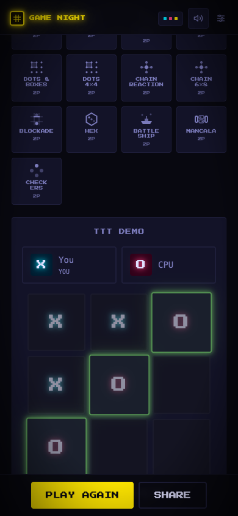
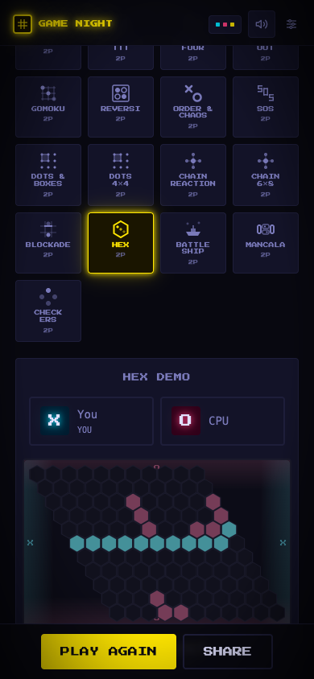
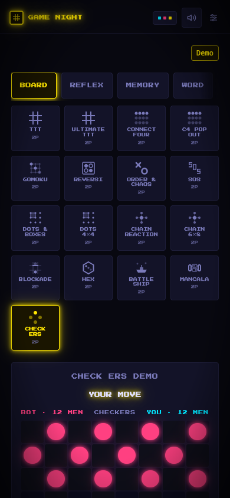
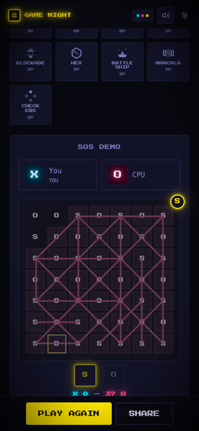

BOARD GAMES: PLAYED, MEASURED, SCORED
All 19 category: 'board' games (+ Pig for comparison) played vs their demo bots on localhost:5179 with a scripted browser (real clicks, 390×844, midnight theme, Firebase blocked — no rooms/profiles written). Every win-checker and bot traced in source. 20 screenshots captured.
P1 — FIX FIRST
UPDATE: both P1s are now shipped & verified — details under each finding.
P1 · BUGVARIANT SOLO MODE PLAYS THE WRONG GAME
The catalog's VS AI flow offers every registry variant with solo: true and navigates to /solo/<variant> — but DEMOS in src/pages/Demo.jsx has no entry for tictactoe4, connectfour5, or dice-big. DemoHub falls back to initialType = 'tictactoe' (or connectfour), so the player who picked "TTT 4×4" lands on a 3×3 board titled "TTT DEMO". The demo hub's BOARD tab is also missing both tiles (17 shown vs 19 in the registry).


/solo/tictactoe — byte-identical to the tictactoe4 capture (same MD5), proving the fallback.Why it's cheap: BotBoardDemo is registry-driven — tictactoe4 and connectfour5 already have full getMoveIndex/getWinner/applyMove config, so each is a one-line DEMOS entry (verified pattern: connectfourpop works exactly this way). dice-big needs a boardProps check for the second die before adding.
✔ SHIPPED (verified live): all three DEMOS entries added. Re-verified in the browser: /solo/tictactoe4/solo/connectfour5/solo/dice-bigfix-tictactoe4.png, fix-connectfour5.png, fix-dice-big.png. Also shipped: the explicit not-available card — /solo/:type with no demo now shows "NO SOLO DEMO" (registry label or UNKNOWN GAME for garbage links) with CREATE A ROOM / ALL DEMOS exits, verified live (fix3-notavailable.png). Registry↔DEMOS audit: zero gaps today; the card guards future variants.
P1 · FAIRNESSREMATCH ALWAYS HANDS THE FIRST MOVE TO THE CREATOR
applyPlayAgain/applyNewMatch in src/pages/Game.jsx reset state via freshGameState(), which hardcodes currentTurn: 'X' — and X is always the room creator. In a best-of-N, the same player opens every single game. That's a compounding advantage in exactly the games where the first move is provably strongest (TTT/C4 are solved first-player wins; Gomoku and Hex give a large practical edge — freestyle first-move facts, not estimates).
Suggested fix (schema-free): on play-again, set currentTurn to the previous round's loser (common house rule, adds a catch-up dynamic) or alternate via a persisted nextStarter flip in the room node. Do it once in applyPlayAgain/applyNewMatch — no per-game changes needed.
✔ SHIPPED: rematches now give the first move to the previous round's loser (draws alternate from the last starter, persisted in a starter room field). Applied through the existing firstMoverUpdates() helper, so boards, hangwoman/twotruths (round/setter), and bluff (bluffRound/turn) all get the correct key; real-time/simultaneous games are untouched (helper no-ops). Tests 3214 ✓, build ✓, lint unchanged from baseline. Still open: live two-identity rematch check.
P2 — READABILITY & ACCESSIBILITY ON THE BOARD ITSELF
UPDATE: all three implementation findings below are now shipped & verified — details under each. (Two corrections from the first write-up: Checkers kings always had a ★ glyph, and SOS already had a score bar — the real gaps were the men-discs and the line-fade.)
P2 · CONTRASTHEX: GOAL EDGES ARE NEARLY INVISIBLE
The four goal edges are painted as from-retro-p1/30 gradients (30% opacity) and empty cells sit one step above the background. On the default theme the board reads as one dark blob — a new player can't tell where they must connect, which for Hex is the entire ruleset. Contrast claims here are eyeballed on midnight only; the 30%-alpha token math should be checked across all 5 themes.
Fix: solid tinted rails (p1 left/right, p2 top/bottom) with small ▲/● direction glyphs at the corners; keep glow for occupied stones only.
✔ SHIPPED (verified live): solid tint rails + 60%-alpha side borders + inward arrows + side-letter stones. Screenshot fix2-hex.png. Theme sweep complete: rails + glyphs verified across all six dark themes (midnight/phosphor/amber/synthwave/grid/mono) — fix3-hex-*.png; no contrast fixes needed.

P2 · A11YGOMOKU & CHECKERS IDENTIFY PIECES BY COLOR ALONE
Both boards render plain discs — Gomoku bg-retro-p1/bg-retro-p2 circles, Checkers the same with only a ring for kings. The review checklist's reference pattern (X/O/S glyphs on every other board) exists precisely for this: cyan-vs-pink fails for some color-vision types, and in amber (amber vs cream) or mono (white vs gray) the distinction degrades to brightness-only. Kings are even weaker — a thin ring on a disc.
Fix: a small glyph on each stone (● vs ○, or X/O) at ~60% size; Checkers kings get a crown glyph instead of the ring. No logic changes, board components only.
✔ SHIPPED (verified live): X/O letter inside every Gomoku stone, Hex stone, and Checkers man (kings keep ★). Screenshots fix2-gomoku.png, fix2-checkers.png.

P2 · ENDGAME READABILITYSOS: SCORED-LINE OVERLAY TURNS TO NOISE
Every completed S-O-S draws a persistent highlight. In a real game both players score often (extra-turn chains), and by ~20 lines the board is a wall of glowing strokes — you can't see fresh threats or verify the score. Also, the extra-turn mechanic means one careless S placement can snowball 3–4 points in a row with only a small "GO AGAIN" pulse as warning.
Fix: render only the last N lines at full glow (older ones at ~25% alpha), and add a per-player score chip on the status bar. Pure presentation change.
✔ SHIPPED (verified live): newest 6 lines full-strength, older lines fade to 25% — DOM-verified in a 31-line endgame (6 full / 25 faded). Score bar already existed (correction). Screenshot fix2-sos.png.

P2 · FLOWSOLO ROUTE STILL BURIES THE BOARD UNDER THE CATALOG
Reconfirmed on every game this pass: /solo/:type renders the full category tabs + game grid above the active board (see any capture — the game starts ~1.5 screens down). This is exactly UX-01 from the September UX review, already selected for the focused playability pass — no new work needed, just noting it dominates every screenshot taken for this review. Same fix covers it.
P3 — BOT DEPTH (SOLO FEEL)
All bots are intentionally casual (≤1-ply heuristics). These are the spots where the ceiling is low enough to teach wrong instincts. Numbers below are code constants, not tuned recommendations — anything changed should be playtested (starting values, move direction decided by whether the bot still loses to a basic strategy).
| Game | Observed behavior | Suggested nudge |
|---|---|---|
| C4 POP OUT | Bot never pops (documented in demoBots.js). The variant's core mechanic doesn't exist in solo play — you can't learn to defend a pop because the bot can't make one. | Minimum: pop when popping avoids an immediate loss or wins outright. ~15 lines reusing applyConnectFourPopMove. |
| DOTS & BOXES | Bot takes every available box and always plays a "safe" edge otherwise — it never sacrifices 2 boxes to hold a chain (double-cross). Result: learn one technique and every game ends like the capture — 19–0. | Fine as the easy tier. A "chain-aware" hard mode (all-boxes-then-double-cross heuristic) would give the game any longevity. |
| ORDER & CHAOS | Order-bot only extends the single longest run — it never builds forks (two simultaneous 5-threats), so it's reliably beatable. Chaos-bot is random-safe, which is closer to real Chaos play. | Order-bot: score moves by threats-created (runs of length ≥4 after placement), not just current run length. |
| GOMOKU | Win/block-then-adjacent heuristic. It blocks an open four but doesn't distinguish open vs closed threes, so it loses to any double threat. | Add a 3/4-threat count term. Cheap (~20 lines), big difficulty bump. |
| PIG / MANCALA | Hold-at-20 (risk-scaling behind) and 1-ply greedy are both reasonable casual baselines — no change needed. | — |
PER-GAME VERDICTS (ALL 19 + PIG)
| Game | Played | Win logic | Verdict |
|---|---|---|---|
| TIC TAC TOE | ✅ | ✅ | Works. Bot plays optimal-ish (win/block/center). No issues. |
| TTT 4×4 | ⚠️ | ✅ | Solo mode unreachable — plays 3×3 instead (P1). Logic itself correct (verified 4-length lines). |
| ULTIMATE TTT | ✅ | ✅ | Works; send-to-decided-board → play-anywhere handled. Bot grabs mini-wins/blocks; majority tie-break sensible. |
| CONNECT FOUR | ✅ | ✅ | Works. Center-biased bot with 20% jitter — decent casual. |
| C4 FIVE (9×7) | ⚠️ | ✅ | Solo mode unreachable (P1). Board renders fine in multiplayer config. |
| C4 POP OUT | ✅ | ✅ | Works, but bot never pops (P3). |
| GOMOKU | ✅ | ✅ | Freestyle rules (overlines win) — legit variant, but consider stating it in the rules sheet. Color-only stones (P2). Bot shallow (P3). |
| REVERSI | ✅ | ✅ | Pass handled correctly with "OPPONENT PASSED" note; no-moves-both → correct count end. Bot takes corners, greedy flips — solid casual. |
| ORDER & CHAOS | ✅ | ✅ | Works; role glyphs (X=ORDER/O=CHAOS) clearly labeled. Bot notes in P3. |
| SOS | ✅ | ✅ | Extra-turn on completion correct; draw on tie correct. Endgame overlay noise (P2). |
| DOTS & BOXES 6×6 | ✅ | ✅ | Clinch-at-19 correct; extra-turn on box correct. Bot trivially exploitable (P3). |
| DOTS & BOXES 4×4 | ✅ | ✅ | Same engine, correct 9-clinch. Renders well. |
| CHAIN REACTION 8×10 | ✅ | ✅ | Works; bot has real strategy (capture + corner/safety scoring). Best bot in the set. |
| CHAIN REACTION 6×8 | ✅ | ✅ | Works, renders great on phone. |
| BLOCKADE | ✅ | ✅ | Pathfinding bot is genuinely strong (wall-gain heuristic); fallback chain prevents soft-locks. Strongest solo mode. |
| HEX 11×11 | ✅ | ✅ | Win-check via shortest path, correct. Goal-edge contrast (P2) hurts teaching; bot plays adjacent/contested — weak but fine. |
| BATTLESHIP | ✅ | ✅ | Hunt/target bot correct; placement flow is per-ship tap (fine). Fold contains picker (UX-01). |
| MANCALA | ✅ | ✅ | Sow/skip/capture/sweep all traced correct; greedy bot reasonable. |
| CHECKERS | ✅ | ✅ | Forced-capture enforced in UI (only movable pieces selectable) — nice. Color-only discs (P2); greedy bot OK. |
| PIG (dice) | ✅ | ✅ | Hold-at-20 bot with behind-scaling; fine. |
VERIFIEDWHAT CHECKED OUT
- All 19 board win-detectors traced against real rules — zero logic bugs found (past review passes found several; the current state is clean).
- Pass/stalemate paths verified where they exist: Reversi auto-pass + end, Blockade lockout fallback, Ultimate TTT play-anywhere.
- Boards are real
<button>s with aria-labels (keyboard-reachable, spot-checked on 8 boards). - Last-move ring (M-47) present on every board — genuinely helps re-orientation.
- No console errors in any of the 20 automated sessions.
SCOPENOT COVERED THIS PASS
- Live two-player multiplayer (needs two distinct identities/networks — same-browser tabs share a uid here).
- Real-time games (Pong, Snake, Tron, etc.) — out of scope; "board games" only.
- Contrast claims eyeballed on midnight are now closed: Hex rails + SOS fade captured and DOM-verified across all six dark themes (
fix3-*.png,verify-themes.json) — no fixes needed. - Feel/latency on real devices (animations verified visually only).
SUGGESTED ORDER OF WORK
- 1. ✅ SHIPPED —
DEMOSentries added fortictactoe4+connectfour5+dice-big, verified live. Explicit not-available card also shipped for future/demo-less types. - 2. ✅ SHIPPED — loser-first rematch starter in
applyPlayAgain/applyNewMatchviafirstMoverUpdates(). Remaining: two-identity live check. - 3. ✅ SHIPPED — Hex rails + arrows; X/O glyphs in Hex/Gomoku/Checkers pieces. Verified across all six dark themes.
- 4. ✅ SHIPPED — SOS recent-6 fade; score bar already existed.
- 5. Ship UX-01 (board-first solo) from the existing UX plan — it amplifies everything above.
- 6. Bot nudges (C4-pop defense, Gomoku threat counting) behind a difficulty toggle if desired.
Everything in steps 1–4 is presentation or one-line registry wiring — no Firebase schema, no game-logic-module changes, so unit tests and the registry stay untouched.